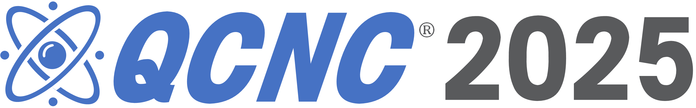

Paper Accepted at IEEE QCNC 2026

IEEE Conference Acceptance
Quantum Computing Research
Accepted – 5-Page Publication
Submission ID
Paper Accepted at IEEE QCNC 2026
My research paper "Quantum Optimization for Access Point Selection Under Budget Constraint" has been accepted as a short paper at the International Conference on Quantum Communications, Networking, and Computing (QCNC 2026), organized by IEEE. The paper underwent a rigorous peer-review process and was selected for inclusion in the QCNC 2026 conference program.
Paper Abstract
This work addresses the challenge of optimal access point selection under budget constraints using quantum optimization techniques. By formulating the problem as a combinatorial optimization task and applying the Quantum Approximate Optimization Algorithm (QAOA), the research demonstrates how quantum computing can offer viable solutions to network resource allocation problems that are intractable for classical methods at scale.
Research Focus
Quantum Optimization for Network Problems – Leveraging quantum algorithms to solve access point selection under real-world budget constraints.
- Problem Formulation: Budget-constrained AP selection as a QUBO
- QAOA: Quantum Approximate Optimization Algorithm
- Comparison: Quantum vs. classical optimization benchmarks
- Network Context: Wireless communications and resource allocation
About QCNC 2026
IEEE QCNC is a premier international conference dedicated to quantum communications, networking, and computing. QCNC 2026 is an in-person event bringing together leading researchers and practitioners in the quantum field.
- Organizer: IEEE
- Track Chairs: Marcello Caleffi, Michael Ng, Reza Nejabat
- Format: In-person conference
- Paper Type: Short paper (5 pages)
Technical Approach
Core methods and tools applied in this research.
- Quantum Framework: Qiskit for circuit design and simulation
- Formulation: QUBO (Quadratic Unconstrained Binary Optimization)
- Algorithm: QAOA with variational parameter optimization
- Evaluation: Approximation ratio and solution quality metrics
Key Contributions
Novel contributions to quantum networking research.
- QUBO Encoding: Original budget-constraint formulation
- Scalability Analysis: Performance across problem sizes
- Practical Relevance: Real-world wireless network scenarios
- Quantum Advantage: Assessment of quantum benefit at scale
Resources
Research Paper
Download the full accepted paper: "Quantum Optimization for Access Point Selection Under Budget Constraint."
Download PaperHaving a paper accepted at an IEEE conference is a major milestone in my research journey. This work sits at the intersection of quantum computing and real-world network optimization — two fields I am deeply passionate about. I look forward to presenting at QCNC 2026 and engaging with the global quantum research community.
Grateful to my advisors and the AUC Computer Science Department for their continued support in pushing the frontier of quantum computing research.